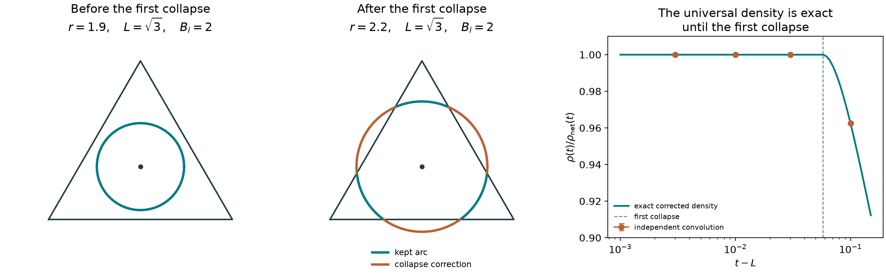

Geometry first · a claim tested and proved
An exact term
for a trivalent net
A theta net has two vertices joined by three geodesic paths. Starting from this geometry, we obtain an exact spectral transform with one explicit term at the net’s total length and three corrections at edge-collapse lengths.
The interesting statement is local universality: before the first collapse, the exact length density depends on the triangle only through its total Steiner length. This holds on an interval, not just as a leading asymptotic.
01 / The tested claim, now a theorem
Exact local dependence on the net length
Let \(L\) be the length of an interior unweighted Steiner junction for three noncollinear unfolded anchors, with every triangle angle strictly below \(120^\circ\). Let \(B_i\) be the three lengths obtained by collapsing an edge to an anchor. A positive length density \(\rho(t)\), extracted from the spectral family below, satisfies
The density is zero below \(L\). Two triangles with the same Steiner length have exactly the same density before either reaches its first collapse threshold.
The full answer beyond that interval is also explicit: three one-dimensional correction integrals account for the collapsed-path contributions. The spectral object and all normalizations are specified below.
02 / What geometry enters
A theta net becomes a planar Steiner problem
Unfold the rectangle to the torus \(T=\mathbb R^2/\Lambda\), where \(\Lambda=B\mathbb Z^2\). For a rectangle with sides \(a,b\), take \(B=\operatorname{diag}(2a,2b)\). Fix one vertex by common translation. The other vertex joins three images of it, represented by anchors
Minimize \(F(q)=\sum_i|q-a_i|\). An interior minimizer has three unit tangents summing to zero, so its junction angles are \(120^\circ\). The other torus vertex balances as well, because all three endpoint images differ by translations. Folding gives reflected geodesics in the rectangle, away from corner hits.
Put \(A_i=|a_j-a_k|^2\), \(S=\sum_iA_i\), and let \(D\) be the area of the anchor triangle. Define
Here \(\{i,j,k\}=\{1,2,3\}\). The angle assumption ensures a noncollapsed junction and \(B_i>L\). All these lengths are exactly computable from the anchor coordinates.
For the earlier rectangle of height \(3\sqrt3/4\), the anchors \(0,(2,3\sqrt3/2),(2,-3\sqrt3/2)\) give
The exact universal interval ends at \(\sqrt{43}\), slightly above the net length. This explains why the earlier numerical density followed its threshold expansion so closely and then deviated at a larger length excess.
03 / A quantum object derived from the graph
Traces of a flat two-coordinate kinetic family
Boundary phases label how a function changes when it wraps around the torus. In a periodic gauge, their constant momentum shift is \(P_\alpha=-i\nabla+2\pi B^{-\mathsf T}\alpha\). This introduces no spatially varying force.
On the four-dimensional configuration space \(T\times T\), define
This is an elliptic constant-coefficient kinetic operator. The cross term mixes momenta. The three parameters arose from the three net edges; no contact interaction is imposed.
Write \(V=|\det B|\), and let \(\Delta\) be the triangle \(s_1,s_2>0\), \(s_1+s_2<1\), with ordinary measure \(ds_1ds_2\), of total mass \(1/2\). The spectral quantity is
Each trace is the sum of \((\lambda+\kappa^2)^{-3}\) over the eigenvalues of the displayed operator. Thus this formulation uses spectra of a specified family; it needs no eigenfunction overlap data.
The coefficients are nonnegative. Their absolutely convergent Fourier series reconstructs the whole spectral quantity. The winding class is therefore selected by spectral boundary-phase data, rather than being manually retained in one untwisted image sum.
Proof of the spectral coefficient identity
Fourier modes on \(T\times T\) diagonalize \(H_s\). For their three positive denominators, the scalar identity \((d_1d_2d_3)^{-1}=2\int_\Delta(\sum_i s_i d_i)^{-3}ds\) follows from three elementary Laplace integrals. Hence \(\mathcal Q\) is \(V^{-2}\) times the convergent double momentum sum of the three denominator products.
Periodizing each free Green kernel gives three lattice image indices. The boundary-phase Fourier integral forces their two differences to be \(Bn\) and \(Bm\). The common index unfolds one relative vertex coordinate to the plane; the common-translation integral cancels the volume normalization. This gives the displayed integral. Exponential image decay and integrability of the planar logarithmic singularities justify the manipulations. Summing the positive coefficients gives \(\mathcal Q_\kappa(0,0)<\infty\), proving absolute reconstruction.
04 / An exact spectral–geometric formula
One net term and three collapse corrections
For \(r\geq B_i\), let
This holds for every \(\kappa>0\) when the anchor triangle is noncollinear and all its angles are strictly below \(120^\circ\). The explicit net term depends only on \(L\). The corrections are nonnegative and use the collapse lengths and triangle geometry.
This is an exact identity at finite parameter, not a stationary-phase approximation. It still contains correction integrals; it is not a discrete sum containing only ordinary stationary nets.
05 / The mechanism behind universality
A circle inside a parameter triangle
Introduce one positive proper time per edge and integrate the planar vertex coordinate exactly as a Gaussian. On the parameter simplex, the remaining geometric functions are
The key calculation is the density of \(W/U\), with measure \(ds/U\). A fixed linear change makes the parameter triangle equilateral and its level sets circles. Before a circle touches a side, its entire angle contributes. After touching, a cap is removed. The three cap thresholds are exactly \(B_i^2\).

Circle calculation and the exact length density
Set \(s_3=1-s_1-s_2\), \(M=\begin{pmatrix}1&1/2\\1/2&1\end{pmatrix}\), \(c_i=(z+S-3A_i)/(3z)\), and \(R^2=(z-z_+)(z-z_-)/(3z^2)\). Completing the square gives \(zU-W=z(R^2-(s-c)^{\mathsf T}M(s-c))\).
The full circle has delta-integral \(2\pi/(\sqrt3z)\). Its center is inside the triangle, and the vertices are outside the circle. The three excluded arcs are disjoint and have angles \(2\phi_i(\sqrt z)\). Therefore
Integrating the remaining proper time gives the exact Bessel decomposition above. For the length density, the net term has inverse Laplace transform
For arbitrary \(t>L\), the full density is this function minus
Thus every correction vanishes identically until its collapse threshold, which proves the exact universal interval.
06 / Unequal junction angles
A weighted local theorem
Let positive weights \(w_i\) form a strict triangle, whose area is \(\delta_w\). Suppose \(\sum_iw_i|q-a_i|\) has an interior minimizer of length \(L_w\). The force balance is \(\sum_iw_iT_i=0\). Define \(B_{i,w}=\sum_{j\ne i}w_j|a_i-a_j|\).
The corresponding trace family has constant shift \(\kappa^2\sum_i s_iw_i^2\) in place of \(\kappa^2\). No spatially varying potential is introduced. This is a change of spectral parameters in a family, not a construction of one fixed interacting Hamiltonian.
Why the weighted formula holds
Rescale the three proper times by \(w_i^2\). The quadratic form on the parameter simplex becomes \(U_w=w_1^2s_2s_3+w_2^2s_1s_3+w_3^2s_1s_2\). Its two-dimensional matrix has determinant \(4\delta_w^2\). The geometric numerator remains linear, with coefficients \(w_j^2w_k^2|a_j-a_k|^2\). Its level sets are ellipses. Before the first side tangency their delta-integral is \(\pi/(2\delta_wz)\), giving the universal term \(K_0(\kappa L_w)/(16\pi\delta_w\kappa^2)\). Side tangencies occur at \(B_{i,w}^2\). The same inverse Laplace calculation proves the local formula. A global three-cap formula is asserted here only for the equal-weight case.
For weights \((0.8,1,1)\) in the benchmark rectangle, the three angles are approximately \(113.5782^\circ,113.5782^\circ,132.8436^\circ\). The independent weighted density calculation differs from the exact local expression by about \(8.1\times10^{-7}\) relative; its empirical standard error is about \(3.5\times10^{-7}\) relative. These are numerical estimates rather than certified bounds.
07 / Reproducible evidence
What was checked independently
- Six triangle shapes, each at \(\kappa=1/2,1,2,5\): the exact one-dimensional net-plus-collapse formula agrees with independent positive two-dimensional quadrature in all \(24\) cases. Maximum observed relative discrepancy: \(6.1\times10^{-12}\).
- Cases include the square, the algebraic rectangle, an equilateral triangle, a right triangle, a scalene triangle, and a triangle with largest angle about \(119.745^\circ\). The implementation rejects a control above \(120^\circ\), where the interior-net hypothesis fails.
- Finite coupled-kinetic resolvent traces independently check the simplex normalization, with relative discrepancy about \(9.1\times10^{-15}\) at the finer quadrature.
- Independent Fourier quadrature of the Bloch spectral sum approaches the geometric coefficient. Three unequal-weight cases separately check the weighted local density by direct edge-length convolution.
| Benchmark Fourier coefficient, \(\kappa=0.7\) | Value |
|---|---|
| Exact geometric decomposition | \(0.00034489241045041234\) |
| Momentum cutoff \(16\), twist grid factor \(16\) | \(0.00034488888387802964\) |
| Momentum cutoff \(32\), twist grid factor \(16\) | \(0.00034489198065699143\) |
| Last observed relative discrepancy | \(1.25\times10^{-6}\) |
These are observed numerical errors, not certified continuum bounds. The theorem follows from the analytic proof rather than from agreement alone.
Complete numerical results · Formal theorem and proofs in LaTeX · Reproducible source
python3 -m pip install -r research-requirements.txt python3 scripts/twisted_net_trace.py
08 / What this establishes
A precise correspondence to develop
Starting from a net led to an explicit spectral trace family and an exact net term with explicit collapse corrections. This goes beyond the earlier leading asymptotic calculation. Winding information is selected by boundary phases, so the earlier fixed-boundary cancellation issue is not silently treated as solved.
The next questions are whether an equally useful identity exists for larger trivalent graphs, how much spectral parameter variation is essential, and what changes in hyperbolic domains. A single fixed many-body Hamiltonian, a practical spectral algorithm, and an arithmetic correspondence have not been obtained.
Proper-time methods and geometrical interpretations of Feynman integrals are classical; compare Davydychev and Delbourgo. The Bessel identities used in the proof are recorded in NIST DLMF. This working note does not claim priority or novelty.
Earlier geometry-first threshold tests · Earlier evidence audit and control calculations